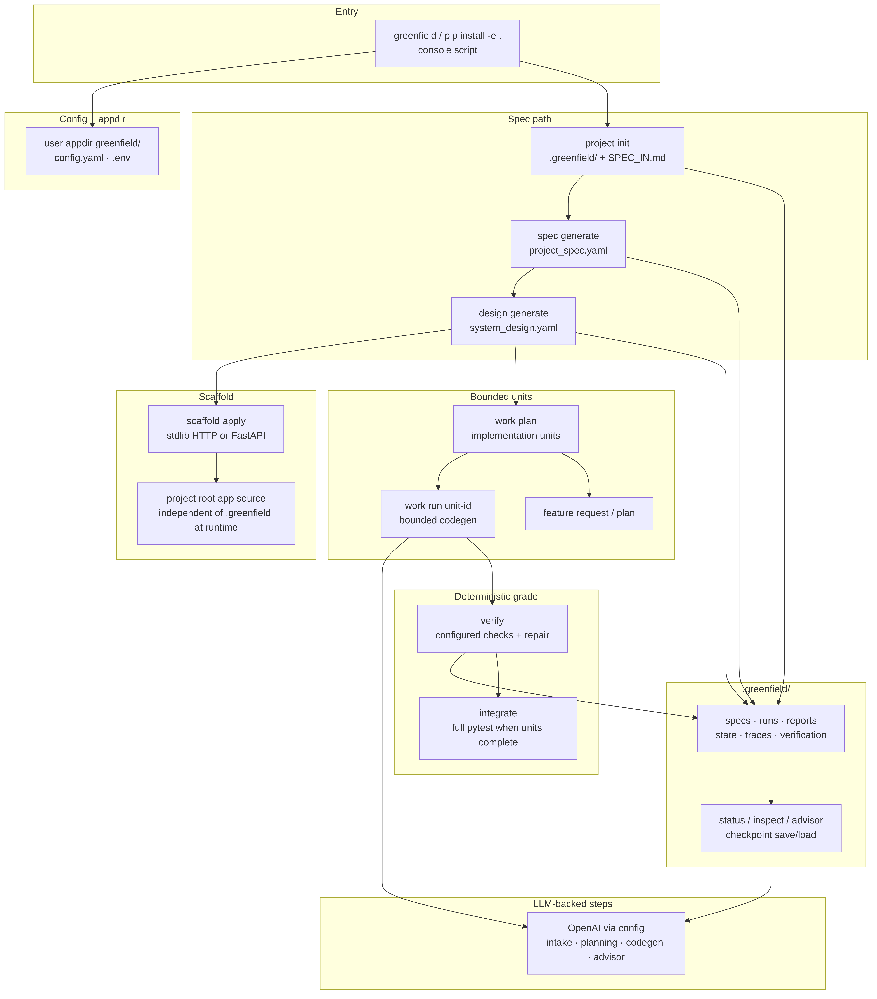

Greenfield
A spec-first harness for building a new app one verified unit at a time.
The problem
Most greenfield LLM flows ask for an app in one breath and hope the pile compiles.
I needed a path from an idea to working code where the plan stays written down, each change stays small enough to review, and verification is something I can run without trusting a chat scrollback. What was missing was a harness that turns intent into specs, scaffolds a starter, and then generates and checks one implementation unit at a time while leaving an inspectable trail.
Why I built it
Day to day, I wanted to start a project from a short idea and still know what was decided, what was generated, and what still fails verification.
A local Python CLI was enough for that. The LLM helps with intake, planning, and bounded codegen. The harness owns the order of work, the artifacts under .greenfield/, and the verify step.
What I built
Greenfield is a Python CLI for a spec-first greenfield coding harness: LLM-assisted planning, bounded codegen, repair, and deterministic verification. It turns a project idea into structured specs, applies a deterministic scaffold (stdlib HTTP by default, or FastAPI), decomposes work into small implementation units, generates and verifies one unit at a time, and keeps the trail inspectable under .greenfield/.
You install with pip install -e ., which provides the greenfield console script. Runtime config lives under the user appdir greenfield/ as config.yaml plus .env for secrets such as OPENAI_API_KEY. Generated application source sits in the project root and does not depend on .greenfield/ at runtime.
Three decisions
These are the craft bets I would defend in a design review, each one about written intent, bounded change, or evidence you can re-run.
1. Spec first, then scaffold, then units.
The path is idea into SPEC_IN.md, then project_spec.yaml and system_design.yaml, then scaffold apply, then a work plan of implementation units. I was counting on a written design outliving the chat that produced it, because the failure I care about is inventing an architecture while you are already halfway through generated files. Specs and design artifacts live under .greenfield/specs/, so later inspect, status, and advisor can ground answers in what was actually recorded.
2. One unit at a time.
work plan breaks the design into bounded units. work run <unit-id> gathers context and runs codegen for that unit alone. I can list units, check latest verification, save checkpoints, and evolve features with feature request / feature plan without treating the whole app as one opaque generation. The bet was that reviewable progress beats a single large write. If a unit fails, repair stays attached to that unit’s traces instead of rewriting the project in one pass.
3. Deterministic verification owns the grade.
verify runs configured checks for the active unit, with retry and repair around that loop. When every unit is complete, integrate runs full pytest tests. Verification reports land under .greenfield/verification/. I was counting on a command I can re-run to decide whether a unit is done, because an LLM saying “looks good” is not a merge bar. The model may propose code and repairs; the harness records whether the verify commands passed.
Proof
You can follow the same command path from the public README and docs/QUICK-START.md.
Condensed path from a new directory after install:
greenfield project init greenfield spec generate greenfield design generate greenfield scaffold apply greenfield work plan greenfield work list greenfield work run <unit-id> greenfield verify greenfield status greenfield integrate greenfield advisor "What should I do next?"
From the public repo you can also confirm: Python 3.12+, OpenAI key for LLM-backed paths, config under the user appdir, artifacts under .greenfield/ (specs, runs, reports, state, traces, verification), and inspect for previewing those artifacts. Operator detail lives in docs/OPERATOR-GUIDE.md.

greenfield) through
user-appdir config, then spec → design → scaffold → bounded
work run units, with deterministic verify /
integrate. LLM helps intake, planning, codegen, and
advisor. Durable trail under .greenfield/; app source
lives in the project root.
Why I built it this way
These boundaries are the same ones I hold when the cost of a wrong turn is a repo full of generated code I cannot explain.
I write the spec before I generate the bulk of the app. I change one unit at a time so a failure stays local. I let verify commands decide whether that unit is done. If you are going to use an LLM on a greenfield project, the plan and the grade should still be something you can open on disk.